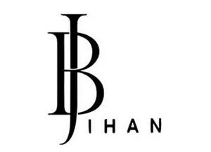

Trade Mark Journal No.2025/014 4 April 2025
UK00004174403 16 March 2025 (9,25)

- Class 9
- Glasses; Lenses for glasses; Magnifying glasses; Prescription glasses; Glasses frames; Optical glasses; Anti-glare glasses; Eye glasses; Sun glasses; Protective glasses; Reading glasses; Sports glasses; Cases for eyeglasses and sunglasses; Goggles; Eyewear; Straps for sunglasses; Fashion eyeglasses.
- Class 25
- Clothing; Beach clothes; Denims [clothing]; Jackets [clothing]; Shorts [clothing]; Clothes for sports; Stuff jackets [clothing]; Headbands [clothing]; Gloves as clothing; Bottoms [clothing]; Capes (clothing); Jerseys [clothing]; Clothing for leisure wear; Bodies [clothing]; Hoods [clothing]; Ready-to-wear clothing; Tops [clothing]; Belts for clothing; Knitwear [clothing]; Hats (Paper -) [clothing]; Linen clothing; Parts of clothing, footwear and headgear; Woven clothing; Athletic clothing; Headwear; Bonnets [headwear]; Caps being headwear; Leather headwear; Headgear; Beanie hats; Sports caps and hats; Neckwear; Gabardines [clothing]; Sun hats; Footwear for sport; Footwear; Sneakers [footwear]; Insoles for footwear; Flip-flops for use as footwear; Sports footwear; Footwear for women; Casual footwear; Heelpieces for footwear; Shoes; Shoes for leisurewear; Slip-on shoes; Ladies' footwear; Sports shoes; Footwear made of vinyl; Gymnastic shoes; Slippers; Non-slip socks; Boots; Socks and stockings; Leggings [trousers]; Pants; Underwear; Sweaters; Sandals and beach shoes; Scarves; Sweatshirts; Panties; Lingerie; Nightdresses; Bras; Pyjamas.
Jihan Albukhari
Representative: Trimark Consulting LLC